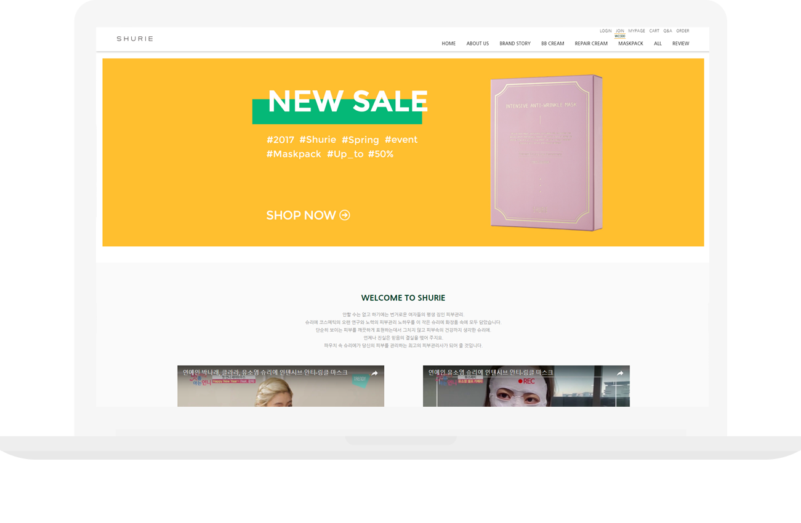

참여도
PC/MOBILE 100%
작업내용
메이크샵으로 작업되어 운영되고있는 홈페이지이다. 반응형으로 리뉴얼을 한 상태이고,
메이크샵이라고 하면 기본적인 틀에서 원하는 소스를 넣어 끼워맞춘다는 생각으로 쉽게 생각했었는데,
오히려 기존에 있는 소스들 및 태그들이 얽혀있어서 작업하는데 애쓴 부분이 있었다.
내가 원하는 방향으로 100%작업은 힘들었지만, 이 작업을 통하여 미디어쿼리 사용이 좀 더 능숙해졌다.
반응형 리뉴얼 작업 후 계속해서 유지보수 관리를 하고있는 상태이다.